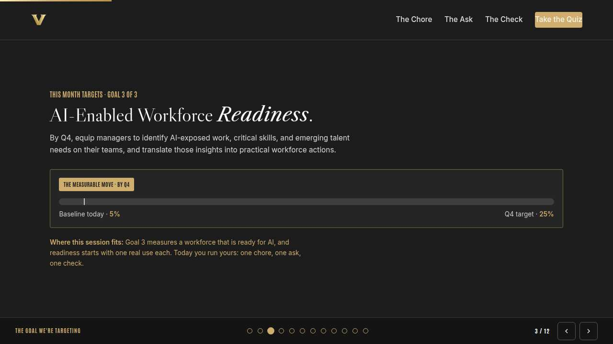

Vanderbilt · Anchor's Edge · ATD facilitator guide · print edition
Your First Win, the facilitator guide

Run of show
| Screen | Full (min) | Core (min) |
|---|---|---|
| Welcome / QR | 2 | 1 |
| The mission | 2 | 1 |
| The goal we are targeting | 2 | 1 |
| Objectives | 1 | 1 |
| Agenda | 1 | skip |
| Pick the chore | 8 | 6 |
| Write the ask | 10 | 7 |
| Check before you use | 9 | 6 |
| The core idea | 1 | skip |
| Recap quiz | 4 | 3 |
| Capstone commitment | 4 | 3 |
| Closing | 1 | 1 |
| Total | 45 | 30 |
The goal this month serves
Goal 3, AI-Enabled Workforce Readiness. Baseline 5%, Q4 target 25%.
Audience
All Vanderbilt staff in the Anchor's Edge weekly rhythm; many attendees will be opening an AI tool for the first time. Works for 6 to 40 on a call; breakouts run in pairs. No prerequisites and zero jargon; December is the AI at Work month.
Room setup
Virtual, instructor led: camera on, deck link in chat, breakouts of 2 available. Learners follow on their own screens via the welcome-slide link or QR. Nothing typed into the deck is saved or sent.
Materials
- Meeting platform with screen share and breakout rooms; deck link ready to paste in chat
- Facilitator machine with the facilitator edition open; notifications off
- Learners on their own devices with the learner link
- Chat open for share-outs; the capstone copy button pastes there cleanly
A week before
- Run the learner edition start to finish and do every interaction honestly; you will demo at least one live.
- Read this month's theme page on the Anchor's Edge dashboard so the goal tie-in is fluent.
- Send the invite with the learner link and one line on what to bring.
The day before
- Test screen share with the facilitator edition; confirm the notes rail is readable.
- Open the learner link on a second device; the QR must land there.
- Run the section interactions once so you can drive them without reading.
30 minutes before
- Welcome slide up as people join; link pasted in chat.
- Close every other tab; silence the machine.
- Breakout rooms pre-configured in pairs.
When things go sideways
If Screen share or the site fails mid-session: Paste the learner link in chat and narrate from your own browser; every interaction runs on learner devices without the share.
If Breakout rooms are unavailable: Run the breakout prompts as 60-second chat storms: everyone types their answer at once, you read the best three aloud.
If A learner starts describing real internal or personal content they want to paste into a tool: Redirect gently and publicly: 'Keep it green for today: public or generic only.' Praise the instinct to try, then point the yellow work at approved VU tools.
If Someone says they are too far behind to ever catch up with AI: Slow the room down: this session assumes zero experience on purpose. One chore, one ask, one check is the entire skill today, and the sandbox session exists for exactly this feeling.
Tough questions, ready answers
Q: Which tool should I actually use?
For green-light chores, any of the approved tools listed on the Anchor's Edge dashboard work, and your navigator can point you to the current list. The habit transfers: the light, the plain-English ask, and the check work the same everywhere, so the skill you built today is portable.
Q: Is using AI for my work cheating?
Handing a chore to a tool and checking the result is the same judgment you already use with a template or a spell-checker, scaled up. The thinking, the facts, and the final call stay yours. What would cross a line is sending anything you have never read and verified yourself.
Q: What if the tool gives me a wrong answer and I miss it?
That is why the first win is chore-sized: small drafts are checkable in two minutes. Verify names, dates, and numbers against sources you trust, and cut anything you cannot confirm. The editor's eye gets faster with practice; start small and it grows with you.
Copy-paste templates
Pre-work invite (paste into the calendar invite)
Subject: Tuesday, 45 minutes to your first AI win. Bring one boring chore from your week: a draft, a summary, notes to tidy. No AI experience needed; we assume you have never opened a tool. Live and hands-on; have the session link open on your own screen.
7-day pulse (send one week after)
Subject: Did the first win happen? Three lines, reply whenever: 1) Did you run the chore on your card? 2) What did the check catch? 3) What chore gets the next green light?
After the session
Seven days out, send the pulse: 'Did you run the chore on your card? What did the check catch? What chore gets the next green light?' Count of completed first wins is the Level 3 metric for the month.

Welcome / QR Full 2 min · Core 1
Get everyone into the deck on their own screen and set the tone: 45 minutes, live, hands on.
Say
“Welcome to Take-Off Tuesday. Scan the code or click the link in chat so this session runs on your screen too. Forty-five minutes, one focus: Hands-on: one safe AI use case for your daily work.”
Do
- Slide up as people join; link pasted in chat every few minutes.
- State the norm once: type into your own screen, nothing you enter is saved or sent.
Watch for: People lurking without the deck open. The interactions only land if the deck is on their screen.
Transition: “Before the topic, thirty seconds on why Vanderbilt is asking for this hour.”

The mission Full 2 min · Core 1
Anchor the session in the Chancellor's charge so the next 40 minutes read as mission work, not admin.
Say
“This year of learning hangs off one sentence from the Chancellor: Vanderbilt will define the great university of the 21st Century and be it. The great university of the 21st Century gets built in ordinary workweeks. Every staff member who hands a chore to AI safely puts an hour back into work that needs a human, and Exceptional Core Operations grows by exactly that much.”
Do
- Read the mission line slowly, once.
- Point at the tie-in line and let it sit; no discussion needed here.
Transition: “That is the why. Here is the number we are moving.”

The goal we are targeting Full 2 min · Core 1
Name the enterprise goal this month serves and the measurable move it needs.
Say
“Every month of Anchor's Edge lands on one of three enterprise goals. This month is Goal 3, AI-Enabled Workforce Readiness: By Q4, equip managers to identify AI-exposed work, critical skills, and emerging talent needs on their teams, and translate those insights into practical workforce actions. Today's baseline is 5%; the Q4 target is 25%. Goal 3 measures a workforce that is ready for AI, and readiness starts with one real use each. Today you run yours: one chore, one ask, one check.”
Do
- Let the meter animate before you speak to the number.
- One line, not a lecture: this session is one of the moves that closes the gap.
Transition: “Here is what you will be able to do in 45 minutes.”

Objectives Full 1 min · Core 1
Set the contract for the session in under a minute.
Say
“By the end of this session: pick one green-light chore from your own week that ai can safely draft; write a plain-english ask that gives the tool the job, the details, and the shape you want; check the result for accuracy and voice before anything leaves your hands. That is the whole contract.”
Do
- Read the three objectives briskly; do not elaborate yet.
Transition: “Three stops to get there.”

Agenda Full 1 min · Core skip
Show the path so the room can pace itself.
Say
“Three stops: pick the chore, write the ask, check before you use. Each one has something to play with, so keep the deck open.”
Do
- Point once at each stop; ten seconds each.
Transition: “Stop one.”
Core path: Core: skip the read-through, gesture at the slide in passing.

Pick the chore Full 8 min · Core 6
Install the traffic light and have every learner find one green-light chore in their own week.
Say
“If you have never opened an AI tool, you are exactly who this hour was built for. One rule keeps everything safe, and it fits on a sticky note. Green, public or generic information: go. Yellow, internal work: approved VU tools only. Red, private information about people: never. Everything we do today lives in green.”
Do
- Run Call the light live; everyone plays on their own screen.
- After the red case, pause: the chore was kind, and the information still made it red.
- Run the breakout: one chore from your own week, call its light.
Ask
“What green-light chore from your own week came to mind first?”
Expect:
- Drafting emails and announcements
- Tidying rough notes
- First versions of routine documents
Respond: All perfect. Chore-sized is the point: your first win should be small enough to finish today and check in two minutes.
Debrief: The light follows the information, and green is a big lane. Most weeks hold more green chores than anyone expects.
Watch for: People whose whole week feels yellow or red. Point them at the generic side of their job: announcements, outlines, and public material are green even in sensitive roles.
Transition: “You have the chore. Now the ask, in plain English.”
Core path: Core: run the trainer, skip the breakout, take one chore from chat.

Write the ask Full 10 min · Core 7
Prove that plain English works: the job, the details that matter, and the shape you want back.
Say
“Here is the best news of the month: talking to an AI tool takes no special language. You brief it the way you would brief a helpful colleague. Here is the job, here are the details that matter, here is the shape I want back. The clearer the ask, the closer the draft comes back to done. Let's build one together.”
Do
- Run Build the ask; two minutes to make both choices and send it.
- Ask one volunteer to read their outcome aloud, weak or strong.
- Point at the pattern: a specific job plus a described shape equals a draft worth keeping.
Ask
“What detail would you add to make the volunteer thank-you ask even better?”
Expect:
- A specific moment from the event
- The audience it is going to
- The sign-off we always use
Respond: All good adds. Details you provide are details you already trust, which also makes the check at the end faster.
Debrief: The tool answers the ask it was given. Plain English, real details, described shape: that is the whole craft.
Watch for: People apologizing for weak first asks. Normalize it fast: everyone's first ask is thin, and one more honest sentence usually fixes it.
Transition: “The draft is back. Before it goes anywhere, you become the editor.”
Core path: Core: everyone runs the builder solo; skip the read-aloud.

Check before you use Full 9 min · Core 6
Install the editor's rule: verify facts, fit, and voice before any draft leaves your hands.
Say
“One honest warning and you are ready. The tool writes with total confidence whether it is right or wrong. Sometimes it invents a detail or misses your meaning, so the last step of every use is the check: every fact verified, the message actually yours, the voice actually you. Two minutes of editing keeps your name safe on everything you send.”
Do
- Read the editor's rule card aloud, once, slowly.
- Run the knowledge check; ask which answer people picked before revealing.
- Run the breakout on the confident-sounding document that turned out wrong.
Ask
“Why does the check stay your job even when the draft looks perfect?”
Expect:
- My name goes on it
- The tool cannot know what is true in my world
- Polish is exactly when errors slip through
Respond: Right on all counts. The polish is the trap; read every line like an editor, especially the impressive ones.
Debrief: Facts, fit, voice. If you cannot verify a detail, cut it or confirm it yourself. Then it ships.
Watch for: Learners concluding AI is too risky to touch at all. Rebalance: the check takes two minutes on a chore-sized draft, and the chore used to take an hour.
Transition: “Quick recap, then you build your first-win card.”
Core path: Core: read the card, run the check, skip the breakout.

The core idea Full 1 min · Core skip
Land the one sentence the session exists to install.
Say
“If you keep one sentence from today, this is it. Read it once, out loud: Start where you are: one chore, one ask, one check.”
Do
- Pause two beats after reading; the word animation carries it.
Transition: “The recap makes it stick.”
Core path: Core: pass through in stride; the sentence reads itself.

Recap quiz Full 4 min · Core 3
Score the learning while it is fresh; wrong answers are teaching moments, not failures.
Say
“Three questions, on your own screen. Answer honestly; the explanations are where the learning sticks.”
Do
- Give the room 90 seconds to run it individually.
- Ask for a show of results in chat: how many got 3 of 3?
- Read out the explanation for whichever question drew the most misses.
Watch for: Rushing past the why lines. The explanations carry the teaching.
Transition: “Now point it at your real week.”

Capstone commitment Full 4 min · Core 3
Convert the session into one named, dated action per person.
Say
“Now make it real. One green-light chore from your own week, the plain-English ask you will make, and the moment you will run it. If you would rather try with help nearby, pick the sandbox session as your moment. Build the card and copy it somewhere you will see it. Two minutes, quiet, go.”
Do
- Two quiet minutes; everyone builds their own card.
- Invite two or three volunteers to read their card aloud or paste it in chat.
- Remind: copy the card somewhere you will see it this week.
Watch for: Vague entries. Nudge for a name-able situation and a real date.
Transition: “Last slide.”

Closing Full 1 min · Core 1
End with the next step and where this thread continues.
Say
“You leave with the whole loop: one chore, one ask, one check. Run it this week and tell your team what the check caught. Thursday's Thrive Thursday takes on the other half of new tools: adaptability, staying steady while things keep changing. And if you want company for your first run, the navigators are hosting a First-AI-Win sandbox session this month; the LinkedIn Learning course Generative AI for Business Leaders pairs well once your first win is behind you.”
Do
- Point at the next-step card; one sentence.
- Name the rest of the week's rhythm: the other sessions echo this month's theme.
Generated from facilitator/notes.json. The on-screen facilitator edition lives at ./ alongside this guide.